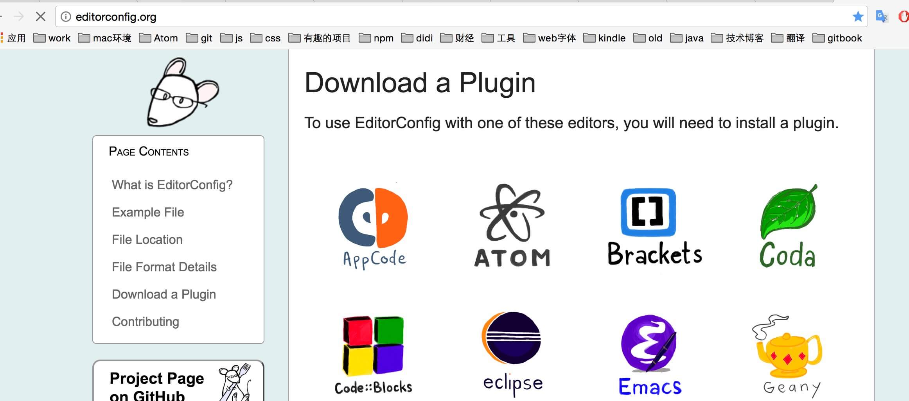
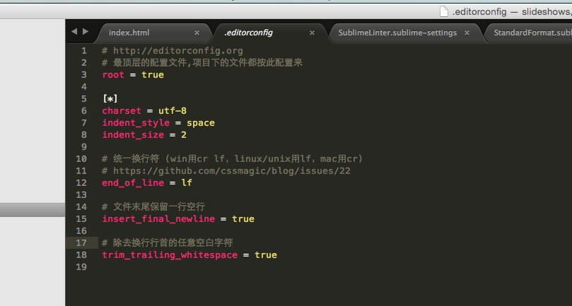
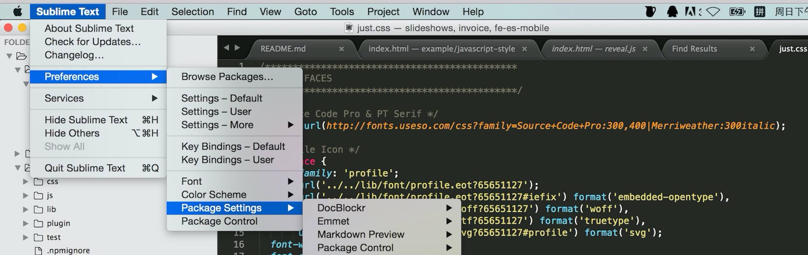
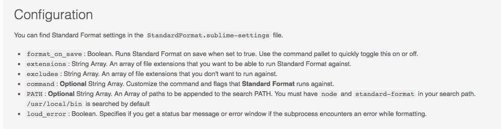
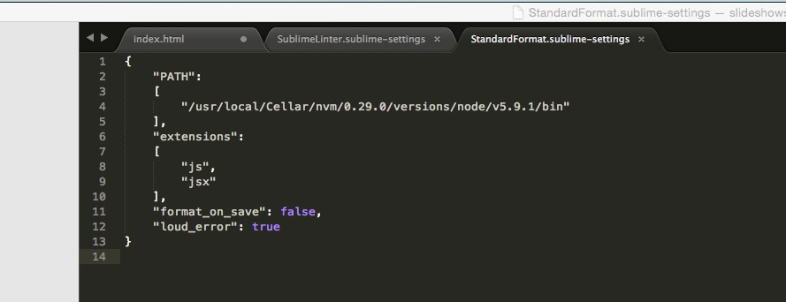
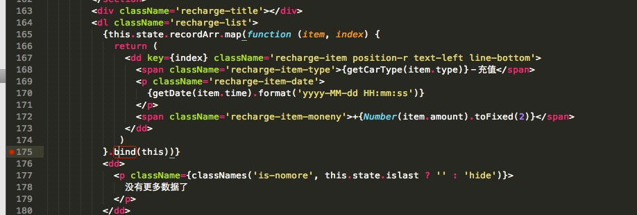
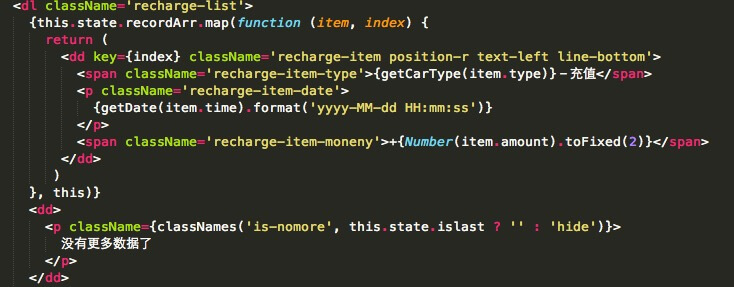
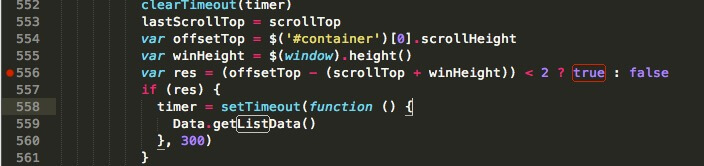
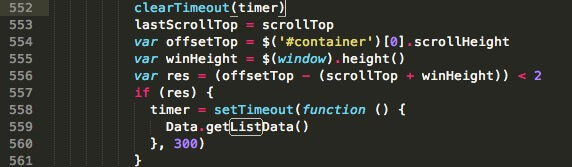

javscript-style
妙才
2016.07.07
javascript规范化能带来什么好处？
- 对个人而言，规避不好的习惯，代码写的会更专业
- 团队里，有助于增强代码的识别度
- 合并代码时，不会因为编码风格不统一而造成困惑
代码检查库
jslint
Douglas Crockford大牛2002年编写
-
优点
- 参数配置完成，可以直接使用
-
缺点
- 不够灵活，不能自定义规则
- 有限的配置选项，许多规则不能禁掉
- 没有文档记录规则
- 很难弄清楚哪个规则引起的错误
jshint
2011年
-
优点
- 支持配置文件，大多数参赛可配置
- 支持基本的
ES6
-
缺点
- 很难弄清楚哪个规则引起的错误
- 不支持自定义规则
jscs
2013年
-
优点
- 支持自定义报告，更容易与其他工具集成
- 在报告中存在标记包含规则名字，所以很容易指出哪个规则造成了错误
- 通过自定义插件进行拓展
-
缺点
- 仅仅检查代码风格的问题。JSCS不检查潜在存在的bugs，例如不适用的变量、偶然的全局变量等等
- 四个工具中最慢，但是在使用中不是一个问题
eslint
2013年
-
优点
- 灵活：任何规则都可以开启闭合，以及有些规则有些额外配置
- 很容易拓展和有需要可用插件
- 包含了在其他检查器中不可用的规则，使得eslint在错误检查上更有用
- 支持ES6，唯一支持JSX的工具
- 支持自定义报告
-
缺点
- 需要一些配置
- 速度慢，但不是主要问题
结论
目前，较流行的是eslint.所以可以考虑使用eslint来构建
自创or跟随开源？
一开始，我是拒绝跟随的，试着做了以下一些事儿：
创建了一个npm包:eslint-config-rmm-es5
困惑?
-
编码规范未定稿
- 有的规则，eslint暂不支持，形如虚设
- 规范，往细了写，可以制定很多，但是又在一定程度上限制了灵活性，这个度不好把握
-
eslint-config-rmm-es5限定过于严格
- 参照现有eslint规则，原则上基于规范整理。但过于严格
- 需要人维护，例如，eslint更新了，你得更新你的库
- 违背了实用性原则，有点背离我的初衷了
standardjs
Badge
好处：有此徽章的项目，一目了然项目的代码风格
standardjs特点
- 不需要配置，一种风格规范全部代码
- 工具集成也不错，文档也挺好
- github上目前有 6445 ✨，还是不错滴
- 长期有人维护（这个好👍）
常用规则-缩进
- 两个空格缩进
-
function sayHello (name) { console.log('hello,', name) }
常用规则-单双引号
- 字符串使用单引号
-
var str = 'renmaomin' // ✓ ok console.log("盛大的") // ✗ avoid
常用规则-未被使用的变量
- 没有未被使用的变量
-
// ✓ ok var $ = require('jquery') $('.main').html('hello world') // ✗ avoid var _ = require('lodash') var $ = require('jquery') $('.main').html('hello world')
常用规则-单双引号
- 字符串使用单引号
-
var str = 'renmaomin' // ✓ ok console.log("盛大的") // ✗ avoid
常用规则-关键字后面需要一个空格
- 关键字后面需要一个空格
-
if (true) { console.log('hello world') } // ✓ ok while(ad){} // ✗ avoid
常用规则-函数声明的圆括号之前需要一个空格
- 函数声明的圆括号之前需要一个空格
-
// ✓ ok function getVersion () { // body } // ✗ avoid $(function(){})
常用规则-判断相等
- 总是使用
===代替==,有一个例外：obj == null是允许的，用来检测null || undefined -
// ✓ ok var isOk = obj.orderId === 1 // ✗ avoid var isOk = obj.orderId == 1
常用规则-中缀操作符必须被隔开
- 中缀操作符必须被隔开
-
// ✓ ok var sum = 1 + 2 // ✗ avoid var sum=1 + 2
常用规则-逗号后面应该跟一个空格
- 逗号后面应该跟一个空格
-
// ✓ ok var numArr = [1, 2, 3, 4] // ✗ avoid var numArr = [1,2,3,4]
常用规则-大括号风格
- 大括号风格采用 one true brace style，它将大括号放在控制语句或声明语句 同一行的位置
-
// ✓ ok function foo() { return true } if (foo) { bar() } if (foo) { bar() } else { baz() } try { somethingRisky() } catch(e) { handleError() } // when there are no braces, there are no problems if (foo) bar() else baz() if (foo) bar() else if (baz) boom() else if (top) top() // ✗ avoid /*eslint brace-style: "error"*/ function foo() { return true; } if (foo) { bar(); } try { somethingRisky(); } catch(e) { handleError(); } if (foo) { bar(); } else { baz(); }
常用规则-err必须处理
- 如果function的参数包含err，必须处理错误
-
// ✓ ok function handerA (err, callback) { if (err) { throw err } callback() } // ✗ avoid function handerB (err, callback) { callback() }
常用规则-browser端的全局变量
- 浏览器端的全局变量总是使用window.去调用
-
// ✓ ok /* global didi */ window.alert('adsads') didi.is('ios') // ✗ avoid alert('adsa12') didi.is('ios')
常用规则-不允许多个空白行
- 不允许多个空白行
-
// ✓ ok var name name = $('.name').val() // ✗ avoid var name name = $('.name').val()
常用规则-三元运算符
- 对于三元运算符在多行的情况下，
?和:和它们后面的代码保持在同一行 -
// ✓ ok var sex = gender ? '男' : '女' var strAge = 16 > 18 ? '我已经成年了！，可以喝啤酒了，哈哈' : '未成年人，不允许向其售酒，明文规定！' // ✗ avoid var strAge = 16 > 18 ? '我已经成年了！，可以喝啤酒了，哈哈' : '未成年人，不允许向其售酒，明文规定！'
常用规则-变量声明
- 变量声明,应该独立成行；只声明不赋值，可以同行
-
// ✓ ok var name, sex var age = 16 // ✗ avoid var name, age = 16
常用规则-附加的圆括号
- 用附加的圆括号结束条件赋值. 这表明，表达式是故意赋值，而不是一个错误的判断语句
-
// ✓ ok function add (num) { var next if ((next = num)) { return num } return next + 1 } // ✗ avoid function add (num) { var next if (next = num) { return num } return next + 1 }
常用规则-没有分号
- 没有分号,这真的没问题！
- 不要以
(,[, or`开始，这是删除分号的唯一潜在的问题。这条规则可以避免这个问题 -
// ✓ ok var num =1 var name = 'miaocai' var age = 27 ;(function(){})() // ✗ avoid var num =1, name = 'miaocai', age = 27 (function(){})()
standard所使用的packages
- eslint: 基于 AST 的 JavaScript 检查器
- standard-engine: Standard 的核心，提取为单独的包，构建自己的检查器！
- eslint-config-standard: Standard ESLint 规则，用于共享配置
- eslint-config-standard-react: 用于 React 和 JSX 的 Standard ESLint 规则
- eslint-plugin-standard: Standard 自定义的 ESLint 规则（不属于 ESLint 的核心）
eslint-config-standard配置简单介绍
- verson: 5.3.1
-
{ // 设置解析器选项 "parserOptions": { "ecmaVersion": 6, // 指定你想要使用的 ECMAScript 版本 "ecmaFeatures": { // 表示你想使用的额外的语言特性 // 启用实验性的 object rest/spread properties 的支持 // let { x, y, ...z } = { x: 1, y: 2, a: 3, b: 4 }; // x; => 1 // y; => 2 // z; => { a: 3, b: 4 } "experimentalObjectRestSpread": true, // 启用 JSX "jsx": true }, "sourceType": "module" // "module"（如果你的代码是 ECMAScript 模块) }, // 环境定义了预定义的全局变量。可用的环境有 http://eslint.cn/docs/user-guide/configuring "env": { "es6": true, // 支持除了modules所有 ECMAScript 6 特性 "node": true // Node.js 全局变量和 Node.js 作用域。 }, // ESLint 支持使用第三方插件,插件名称可以省略 eslint-plugin- 前缀 "plugins": [ "standard", "promise" ], // 全局对象 "globals": { "document": false, "navigator": false, "window": false }, "rules": { "accessor-pairs": 2, // 强制getter/setter成对出现在对象中 "arrow-spacing": [2, { "before": true, "after": true }], // 要求箭头函数的箭头之前或之后有空格 "block-spacing": [2, "always"], // 单行代码块中使用1个空格 "brace-style": [2, "1tbs", { "allowSingleLine": true }], // one true brace style，允许单行 "camelcase": [2, { "properties": "never" }], // 使用camel命名风格，不检查属性名称 "comma-dangle": [2, "never"], // 禁用拖尾逗号 "comma-spacing": [2, { "before": false, "after": true }], // 逗号前面没有空格，后面有空格 "comma-style": [2, "last"], // 逗号放在数组元素、对象属性或变量声明之后，且在同一行 "constructor-super": 2, // 派生类中的构造函数必须调用 super()。非派生类的构造函数不能调用 super() // 允许在单行中省略大括号，而if、else if、else、for // 、while 和 do，在其他使用中依然会强制使用大括号 "curly": [2, "multi-line"], "dot-location": [2, "property"], // 点操作符和属性放在同一行 "eol-last": 2, // 要求文件末尾保留一行空行 "eqeqeq": [2, "allow-null"], // 要求使用 === 和 !== ,允许 == null // 强制 generator 函数中 * 号周围有空格 "generator-star-spacing": [2, { "before": true, "after": true }], // 强制回调错误处理,遇到err或error参数 "handle-callback-err": [2, "^(err|error)$" ], "indent": [2, 2, { "SwitchCase": 1 }], // 缩进采用2个空格 "jsx-quotes": [2, "prefer-single"], // 所有不包含单引号的 JSX 属性值使用单引号 // 对象字面量的键和冒号之间没有空格，冒号和值之间只有一个空格 "key-spacing": [2, { "beforeColon": false, "afterColon": true }], // 要求在关键字之前至少有一个空格, 要求在关键字之后至少有一个空格 "keyword-spacing": [2, { "before": true, "after": true }], // 要求构造函数首字母大写, 特定内建标识符不适用于此规则, // 要求调用 new 操作符时有首字母大小的函数 "new-cap": [2, { "newIsCap": true, "capIsNew": false }], // 要求调用无参构造函数时带括号 "new-parens": 2, // 禁止使用 Array 构造函数 "no-array-constructor": 2, // 禁用 caller 或 callee "no-caller": 2, // 不允许修改类声明的变量 "no-class-assign": 2, // 禁止在条件语句中出现赋值操作符 "no-cond-assign": 2, // 不允许改变用const声明的变量 "no-const-assign": 2, // 禁止在正则表达式中使用控制字符 "no-control-regex": 2, // 禁用 debugger "no-debugger": 2, // 禁止删除变量 "no-delete-var": 2, // 禁止在 function 定义中出现重复的参数 "no-dupe-args": 2, // 不允许类成员中有重复的名称 "no-dupe-class-members": 2, // 禁止在对象字面量中出现重复的键 "no-dupe-keys": 2, // 禁止重复 case 标签 "no-duplicate-case": 2, // 禁止重复 import 标签 "no-duplicate-imports": 2, // 禁止在正则表达式中出现空字符集 "no-empty-character-class": 2, // 禁止使用空解构模式 "no-empty-pattern": 2, // 禁用 eval() "no-eval": 2, // 禁止对 catch 子句中的异常重新赋值 "no-ex-assign": 2, // 禁止扩展原生对象 "no-extend-native": 2, // 禁止不必要的函数绑定 "no-extra-bind": 2, // 禁止不必要的布尔类型转换 "no-extra-boolean-cast": 2, // 禁止冗余的括号 "no-extra-parens": [2, "functions"], // 禁止 case 语句落空 "no-fallthrough": 2, // 禁止浮点小数 => var num = .5; "no-floating-decimal": 2, // 禁止对 function 声明重新赋值 "no-func-assign": 2, // 禁用隐式的eval() // setTimeout("alert('Hi!');", 100); // x avoid "no-implied-eval": 2, // 禁止 function 声明出现在嵌套的语句块中 "no-inner-declarations": [2, "functions"], // 禁止在 RegExp 构造函数中出现无效的正则表达式 "no-invalid-regexp": 2, // 禁止不规则的空白 // 各种空白字符可能是由程序员误输入的，比如拷贝或键盘快捷键。 // 例如，在 OS X 系统按下 Alt + Space，增加了一个不间断空格。 "no-irregular-whitespace": 2, // 禁用迭代器 // __iterator__ 属性曾是 SpiderMonkey 对 JavaScript 的扩展，被用来创建自定义迭代器， // 兼容JavaScript的 for in 和 for each。然而，这个属性现在废弃了，所以不应再使用它 "no-iterator": 2, // 禁用与变量同名的标签 "no-label-var": 2, // 禁用标签语句 "no-labels": [2, { "allowLoop": false, "allowSwitch": false }], // 禁用不必要的嵌套块 "no-lone-blocks": 2, // 禁止使用 空格 和 tab 混合缩进 "no-mixed-spaces-and-tabs": 2, // 禁止出现多个空格 "no-multi-spaces": 2, // 禁止多行字符串 "no-multi-str": 2, // 不允许多个空行 "no-multiple-empty-lines": [2, { "max": 1 }], // 禁止对原生对象赋值 "no-native-reassign": 2, // 禁止在 in 表达式中出现否定的左操作数 "no-negated-in-lhs": 2, "no-new": 2, // 禁用Function构造函数 "no-new-func": 2, // 禁止使用 Object 构造函数 "no-new-object": 2, // 不允许 new require "no-new-require": 2, // 禁用Symbol构造函数 "no-new-symbol": 2, // 禁止原始包装实例 "no-new-wrappers": 2, // 禁止将全局对象当作函数进行调用 "no-obj-calls": 2, // 禁用八进制字面量 "no-octal": 2, // 禁止在字符串字面量中使用八进制转义序列 "no-octal-escape": 2, // 当使用 _dirname 和 _filename 时不允许字符串拼接 "no-path-concat": 2, // 禁用__proto__ "no-proto": 2, // 禁止重新声明变量 "no-redeclare": 2, // 禁止正则表达式字面量中出现多个空格 "no-regex-spaces": 2, // 禁止在返回语句中赋值,除非使用括号把它们括起来 "no-return-assign": [2, "except-parens"], // 禁止自身赋值 "no-self-assign": 2, // 禁止自身比较 "no-self-compare": 2, // 不允许使用逗号操作符 "no-sequences": 2, // 禁止重定义关键字 "no-shadow-restricted-names": 2, // 不允许函数名和执行它的圆括号之间有空白 "no-spaced-func": 2, // 禁用稀疏数组 "no-sparse-arrays": 2, // 在构造函数中禁止在调用super()之前使用this或super "no-this-before-super": 2, // 限制可以被抛出的异常 "no-throw-literal": 2, // 禁用行尾空格 "no-trailing-spaces": 2, // 禁用未声明的变量 "no-undef": 2, // 不允许初始化变量值为 undefined "no-undef-init": 2, // 禁止使用令人困惑的多行表达式 "no-unexpected-multiline": 2, // 禁用一成不变的循环条件 "no-unmodified-loop-condition": 2, // 更简洁的条件表达式 "no-unneeded-ternary": [2, { "defaultAssignment": false }], // 禁止在 return、throw、continue 和 break 语句后出现不可达代码 "no-unreachable": 2, // 禁止在 finally 语句块中出现控制流语句 "no-unsafe-finally": 2, // 禁止未使用过的变量 "no-unused-vars": [2, { "vars": "all", "args": "none" }], // 禁用不必要的 .call() 和 .apply() "no-useless-call": 2, // 不允许在对象上不必要的计算属性键 "no-useless-computed-key": 2, // 禁用不必要的构造函数 "no-useless-constructor": 2, // 禁用不必要的转义 "no-useless-escape": 2, // 禁止属性前有空白 "no-whitespace-before-property": 2, // 禁用 with 语句 "no-with": 2, // 多个变量声明，未赋值可以同行 "one-var": [2, { "initialized": "never" }], // 操作符 ？和 : 与它们后面的代码在同一行 "operator-linebreak": [2, "after", { "overrides": { "?": "before", ":": "before" } }], // 代码块不允许填充 "padded-blocks": [2, "never"], // 字符串使用单引号 "quotes": [2, "single", "avoid-escape"], // 不使用分号 "semi": [2, "never"], //分号前无空格，后面有空格 "semi-spacing": [2, { "before": false, "after": true }], // 语句块的大扩符之前有一个空格 "space-before-blocks": [2, "always"], // 函数声明的圆括号之前必须有一个空格 "space-before-function-paren": [2, "always"], // 禁止圆括号内有空格 "space-in-parens": [2, "never"], // 要求中缀操作符周围有空格 "space-infix-ops": 2, // 单词类一元操作符后面有空格，例如：new、delete、typeof、void、yield // 这些一元操作符后面没有空格: -、+、--、++、!、!! "space-unary-ops": [2, { "words": true, "nonwords": false }], // 注释前包含一个空格, 除了["global", "globals", "eslint", "eslint-disable", "*package", "!", ","] "spaced-comment": [2, "always", { "markers": ["global", "globals", "eslint", "eslint-disable", "*package", "!", ","] }], // 强制模板字符串中空格的使用 "template-curly-spacing": [2, "never"], // 要求调用 isNaN()检查 NaN "use-isnan": 2, // 强制 typeof 表达式与有效的字符串进行比较 "valid-typeof": 2, // 需要把立即执行的函数包裹起来 "wrap-iife": [2, "any"], // 强制在 yield* 表达式中 * 周围使用空格 "yield-star-spacing": [2, "both"], // 禁止Yoda条件 "yoda": [2, "never"], // 对象的花括号中成对出现1个或者0个空格 "standard/object-curly-even-spacing": [2, "either"], // 括号内成对出现1个或者0个空格 "standard/array-bracket-even-spacing": [2, "either"], // 计算属性中成对出现1个或者0个空格 "standard/computed-property-even-spacing": [2, "even"], // 强制标准命名参数对于Promise构造函数 "promise/param-names": 2 } }
eslint-config-standard-jsx配置简单介绍
-
{ "parserOptions": { "ecmaVersion": 6, "ecmaFeatures": { "jsx": true } }, "plugins": [ // 使用eslint-plugin-react "react" ], "rules": { // JSX里的boolean的写法 // var Hello =// ✓ ok // var Hello = // ✗ avoid "react/jsx-boolean-value": 2, // JSX里大括号约定 "react/jsx-curly-spacing": [2, "never"], // JSX里赋值不允许留白 "react/jsx-equals-spacing": [2, "never"], // JSX里缩进为2个空格 "react/jsx-indent": [2, 2], // JSX里属性缩进为2个空格 "react/jsx-indent-props": [2, 2], // JSX里禁止重复属性 "react/jsx-no-duplicate-props": 2, // JSX里禁止使用未定义的 "react/jsx-no-undef": 2, // JSX的闭合标签的'/'之前需要一个空格 "react/jsx-space-before-closing": 2, "react/jsx-uses-react": 2, // 防止JSX使用的变量被错误地标记为未使用 "react/jsx-uses-vars": 2, // 防止多余的标签，没有子组件 "react/self-closing-comp": 2 } }
如何忽略文件？
standard 自动忽略这些文件：node_modules/**、 *.min.js、 bundle.js、 coverage/**、 隐藏文件与目录（名字以 . 开始）、项目根目录下的 .gitignore。
有时需要忽略其它的目录或文件，可以这样做，package.json 添加 standard.ignore:
"standard": {
"ignore": [
"**/out/",
"/lib/select2/",
"/lib/ckeditor/",
"tmp.js"
]
}
如果要支持es7的语法，该如何做？
strandard是默认支持es5/es6。如果要支持es7,使用babel-eslint,如 npm install babel-eslint，然后将它添加到 package.json：
{
"standard": {
"parser": "babel-eslint"
}
}
全局变量
为了让 standard（包括阅读代码的人类）知道代码中某些变量是全局变量，在文件顶部添加：
/* global myVar1, myVar2 */
如果你有几百个文件，每个文件都添加将麻烦死。这时可以在 package.json 添加：
{
"standard": {
"globals": [ "myVar1", "myVar2" ]
}
}
隐藏某条规则？
-
隐藏一条规则
/* eslint-disable no-caller */ requestAnimationFrame(arguments.callee) /* eslint-enable no-caller */ -
隐藏多条规则
/* eslint-disable no-native-reassign, no-undef */ inTransition = false /* eslint-enable no-native-reassign, no-undef */
能否让规则 X 可配置？
不允许。想想也是，如果可以改动，直接用eslint就可以了。standard 的主旨是通过挑选合适的规则为你节省时间，从而让你将时间用在解决实际问题上。如果你真的想一个个的去配置几百个 eslint 规则，你可以直接用 eslint。
重要提示：拿起 standard，向前走，有许多实际问题供你花时间解决！
输出更漂亮
安装snazzy:
npm install snazzy
然后：
$ standard --verbose | snazzy
注意：standard-tap,standard-json,standard-reporter没什么用，可以直接忽略
editorconfig-1
统一编码风格，例如缩进，utf-8编码等
需要去官网下载相关IDE的插件
editorconfig-2
项目根目录创建.editorconfig文件
工具篇
linter
支持很多编辑，像sublie text,atom,vim等等，具体的相关插件可以去官网查看,此处我以自己的环境(sublime text)做介绍
修改插件配置-1
- 打开SublimeLinter的配置文件，配置path,调整debug模式，确认linter解释器为standard
-
SublimeLinter路径：

修改插件配置-2
-
配置path:
- 填写node的
path🐳mac(osx)
- 填写node的
-
调整debug模式:
- 修改
debug字段为true, - 修改
show_errors_on_save字段为true
- 修改
-
确认linter解释器为standard:
- 修改eslint字段下的
@disable字段为true
- 修改eslint字段下的
格式化插件StandardFormat-1
- 需要全局安装standard-format:
npm install -g standard-format - 修改配置：PATH指向
node,将format_on_save改为false,添加jsx到extensions 
格式化插件StandardFormat-2
修改后的配置：
ghooks
git代码提交钩子
- 语法：
npm install --save-dev ghooks - 配置 ：在package.json里添加：
-
"config": { "ghooks": { "pre-commit": "npm run lint" } }
项目里直接配置standard相关插件
- 安装：
npm install --save-dev standard snazzy ghooks - 配置package.json:
-
"scripts": { "prebuild": "npm run lint", "build": "gulp", "lint": "standard --verbose | snazzy --format", }, "standard": { "ignore": [ "dist/", "mock/", "**/lib/" ], "env": { "mocha": true } }, "config": { "ghooks": { "pre-commit": "npm run lint" } }, - npm 提供了pre钩子，这可以在我们压缩代码之前，对代码进行风格检查
项目里遇到的风格问题-bind
- 👎不好:
- 
- Error: The function binding is unnecessary. no-extra-bind
项目里遇到的风格问题-bind
- 👍好:
- 
项目里遇到的风格问题－boolean
- 👎不好:
- 
- Error: Unnecessary use of boolean literals in conditional expression. no-unneeded-ternary
项目里遇到的风格问题-boolean
- 👍好:
- 
Q&A
- End -